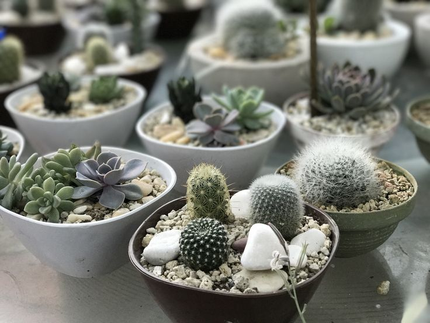

Кактусы и соккуленты
Кактусы и суккуленты — это удивительная группа растений, которые прекрасно адаптировались к жизни в условиях ограниченной влаги. Эти растения имеют уникальные физиологические особенности, позволяющие им сохранять воду и выживать в жарких и засушливых условиях, что делает их идеальными для выращивания в домашних условиях и в садах в жарком климате. Кактусы, относящиеся к семейству кактусовых, часто имеют колючки, которые помогают защитить их от травоядных и предотвращают испарение влаги, тогда как суккуленты могут принадлежать к различным семействам и обычно имеют мясистые листья или стебли, которые накапливают воду.
Одним из главных преимуществ кактусов и суккулентов является их неприхотливость в уходе. Эти растения идеально подходят для начинающих садоводов, так как требуют минимального полива, а также могут процветать в условиях недостаточного освещения. Их способность выживать в сложных условиях делает их прекрасными компаньонами в домашних интерьерах, а также в офисах, где часто отсутствует естественное освещение. Кроме того, многие виды кактусов и суккулентов имеют красивую и разнообразную окраску, что делает их декоративными элементами.
Среди популярных примеров кактусов можно выделить такие виды, как эхинокактус (в народе часто называют "бочонок") и опунция. Что касается суккулентов, то наиболее известные виды включают алоэ вера, которое также обладает лечебными свойствами, и седум (или "камнеломка"), который часто используется для создания рокариев и альпийских горок. Эти растения не только привлекают внимание своим необычным внешним видом, но и могут быть бесценными помощниками в оформлении интерьеров и ландшафта